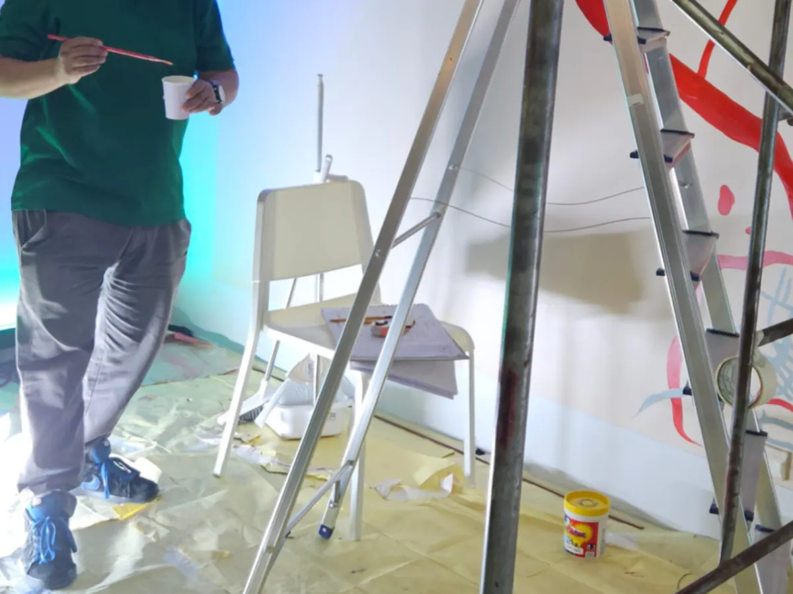
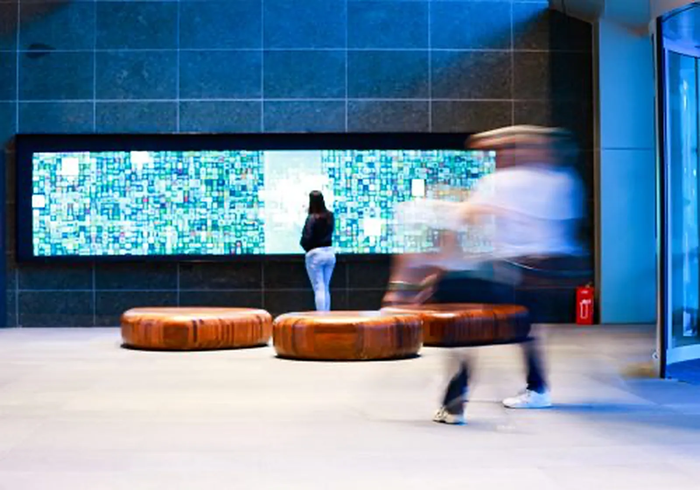

Tulay Foundation
Tulay means bridge.
Choose a program to learn more.
Our programs
Tulay Foundation
About us
We believe in contributing to the nation’s development goals by adapting to the evolving needs of stakeholders so we can remain relevant and responsive. Through our programs, we affirm our commitment to aligning, giving focus, and making an impact in the lives of people in our conglomerate, communities, and country.

Projects
How it works
What it has changed
Figures as of 2025
Be the bridge.
Scan to keep reading on your phone. This screen collects nothing about you.
Three more programs to explore

Project description to come.